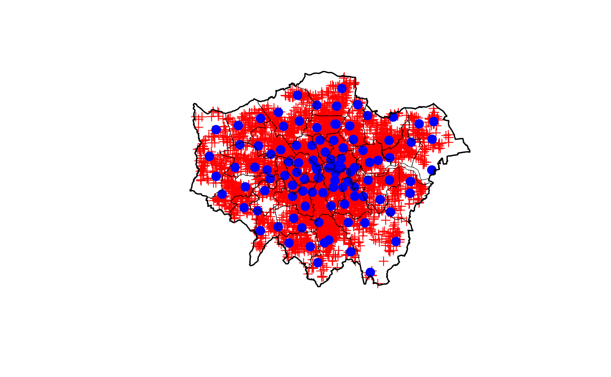

LondonFire.RdProvides the compiled dwelling fire data of London in 2015. The data is provided
as a SpatialPointsDataFrame in object LondonFire. In addition
the boundary and borough information is provided in objects LondonBoundaries and
LondonBoroughs. Locations of all fire stations in London of 2015 are provided in
object LondonFStations.
data("LondonFire")The LondonFire data contains the following variables:
Numeric, the time after the emergency call until the first fire engine arrived.
Numeric, The time of day at which the emergency call was received.
Numeric, the fire station intensity at the location of the fire scene. The
intensity is measured using a kernel density estimate of the LondonFStations using the
spatstat package.
London Fire (2015). London Fire Brigade Incident Records. London Data Store, UK Open Government Licence (OGL v2). https://data.london.gov.uk/dataset/london-fire-brigade-incident-records
London Boroughs/Boundaries (2015). Statistical GIS Boundary Files for London. London Data Store, UK Open Government Licence (OGL v2). https://data.london.gov.uk/dataset/statistical-gis-boundary-files-london
London Fire Stations (2015). London Fire Brigade,
https://www.london-fire.gov.uk/.
(old url http://www.london-fire.gov.uk/A-ZFireStations.asp)
Taylor BM (2016). Spatial Modelling of Emergency Service Response Times. Journal of the Royal Statistical Society: Series A (Statistics in Society), 180(2), 433--453. doi:10.1111/rssa.12192
data("LondonFire")
plot(LondonFire, col = "red")
plot(LondonFStations, col = "blue", cex = 1.5, pch = 16, add = TRUE)
plot(LondonBoroughs, lwd = 0.5, add = TRUE)
plot(LondonBoundaries, add = TRUE, lwd = 1.5)

head(LondonFire@data)
#> arrivaltime daytime fsintens
#> 12279 6.033333 0.1263889 248.6067
#> 12280 3.400000 0.3266667 1646.1975
#> 12281 4.383333 0.4641667 1333.3776
#> 12282 5.800000 1.9297222 300.6900
#> 12283 5.133333 1.9308333 1195.7156
#> 12284 4.966667 3.5480556 319.6787